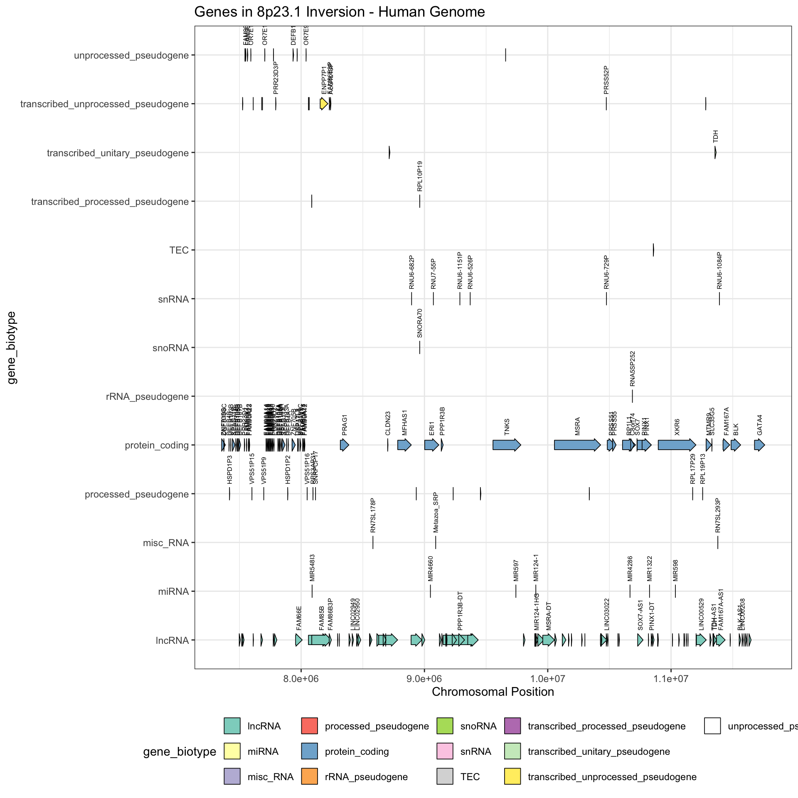
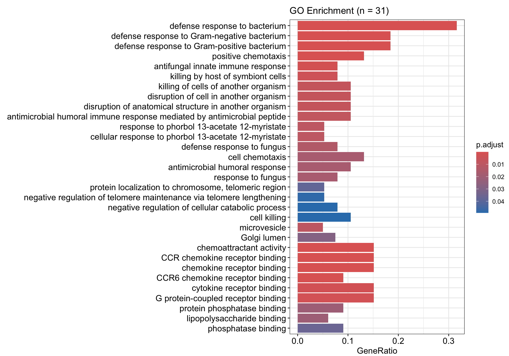
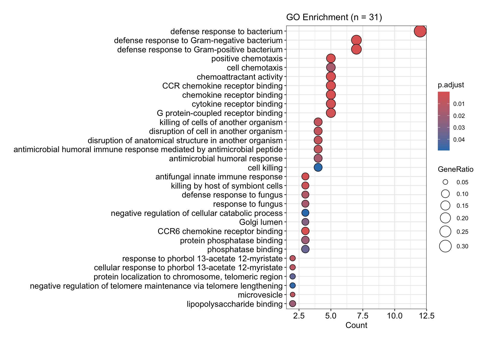
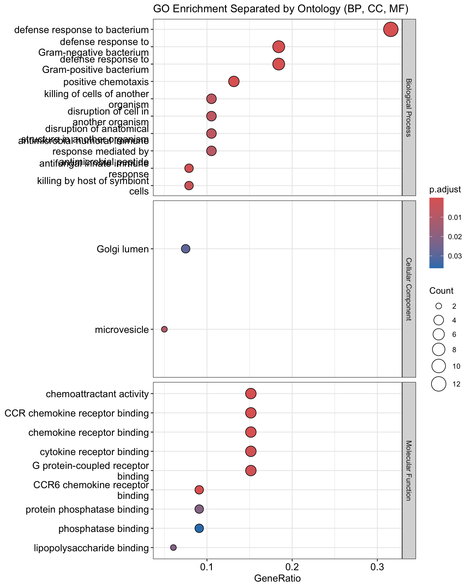

GO Enrichment Analysis
Rashika Ranasinghe
2025-11-24
Perform a GO Enrichment Analysis for the genes in the biggest inversion in the human genome, chr8p23.1, approximately 4.5 to 12 megabases (Mb) in size.
# Load the required libraries
library(biomaRt)## Warning: package 'biomaRt' was built under R version 4.4.2library(gggenes)
library(ggplot2)## Warning: package 'ggplot2' was built under R version 4.4.3library(dplyr)##
## Attaching package: 'dplyr'## The following object is masked from 'package:biomaRt':
##
## select## The following objects are masked from 'package:stats':
##
## filter, lag## The following objects are masked from 'package:base':
##
## intersect, setdiff, setequal, unionlibrary(org.Hs.eg.db)## Loading required package: AnnotationDbi## Loading required package: stats4## Loading required package: BiocGenerics##
## Attaching package: 'BiocGenerics'## The following objects are masked from 'package:dplyr':
##
## combine, intersect, setdiff, union## The following objects are masked from 'package:stats':
##
## IQR, mad, sd, var, xtabs## The following objects are masked from 'package:base':
##
## anyDuplicated, aperm, append, as.data.frame, basename, cbind,
## colnames, dirname, do.call, duplicated, eval, evalq, Filter, Find,
## get, grep, grepl, intersect, is.unsorted, lapply, Map, mapply,
## match, mget, order, paste, pmax, pmax.int, pmin, pmin.int,
## Position, rank, rbind, Reduce, rownames, sapply, saveRDS, setdiff,
## table, tapply, union, unique, unsplit, which.max, which.min## Loading required package: Biobase## Welcome to Bioconductor
##
## Vignettes contain introductory material; view with
## 'browseVignettes()'. To cite Bioconductor, see
## 'citation("Biobase")', and for packages 'citation("pkgname")'.## Loading required package: IRanges## Warning: package 'IRanges' was built under R version 4.4.2## Loading required package: S4Vectors##
## Attaching package: 'S4Vectors'## The following objects are masked from 'package:dplyr':
##
## first, rename## The following object is masked from 'package:utils':
##
## findMatches## The following objects are masked from 'package:base':
##
## expand.grid, I, unname##
## Attaching package: 'IRanges'## The following objects are masked from 'package:dplyr':
##
## collapse, desc, slice##
## Attaching package: 'AnnotationDbi'## The following object is masked from 'package:dplyr':
##
## select## library(clusterProfiler)## Warning: package 'clusterProfiler' was built under R version 4.4.2## clusterProfiler v4.14.6 Learn more at https://yulab-smu.top/contribution-knowledge-mining/
##
## Please cite:
##
## T Wu, E Hu, S Xu, M Chen, P Guo, Z Dai, T Feng, L Zhou, W Tang, L Zhan,
## X Fu, S Liu, X Bo, and G Yu. clusterProfiler 4.0: A universal
## enrichment tool for interpreting omics data. The Innovation. 2021,
## 2(3):100141##
## Attaching package: 'clusterProfiler'## The following object is masked from 'package:AnnotationDbi':
##
## select## The following object is masked from 'package:IRanges':
##
## slice## The following object is masked from 'package:S4Vectors':
##
## rename## The following object is masked from 'package:biomaRt':
##
## select## The following object is masked from 'package:stats':
##
## filterlibrary(enrichplot)## Warning: package 'enrichplot' was built under R version 4.4.2## enrichplot v1.26.6 Learn more at https://yulab-smu.top/contribution-knowledge-mining/
##
## Please cite:
##
## Guangchuang Yu, Qing-Yu He. ReactomePA: an R/Bioconductor package for
## reactome pathway analysis and visualization. Molecular BioSystems.
## 2016, 12(2):477-479library(Gviz)## Loading required package: GenomicRanges## Loading required package: GenomeInfoDb## Warning: package 'GenomeInfoDb' was built under R version 4.4.2## Loading required package: gridPull genes that are on the inversion region from Ensembl
# Define inversion coordinates
chromosome <- "8"
inv_start <- 7370695
inv_end <- 11678224
# Connect to Ensembl
mart <- useEnsembl(biomart = "genes", dataset = "hsapiens_gene_ensembl")
# Query Ensembl for genes in the inversion
genes <- getBM(
attributes = c("ensembl_gene_id", "external_gene_name", "description",
"chromosome_name", "start_position", "end_position", "gene_biotype"),
filters = c("chromosome_name", "start", "end"),
values = list(chromosome, inv_start, inv_end),
mart = mart
)Make a diagram of all the genes on the inversion region
# Prepare the data
gene_plot_df <- genes
gene_plot_df$gene_name <- gene_plot_df$external_gene_name
gene_plot_df$start <- gene_plot_df$start_position
gene_plot_df$end <- gene_plot_df$end_position
# Plot genes along the chromosome
ggplot(gene_plot_df, aes(
xmin = start,
xmax = end,
y = gene_biotype, # improvement: separate rows by biotype
fill = gene_biotype,
label = gene_name
)) +
geom_gene_arrow(arrowhead_width = unit(2, "mm")) +
geom_text(aes(x = (start + end)/2, y = as.numeric(as.factor(gene_biotype)) + 0.2),
size = 2, angle = 90, hjust = 0) +
scale_fill_brewer(palette = "Set3") +
ggtitle("Genes in 8p23.1 Inversion - Human Genome") +
theme_bw() + labs(x = "Chromosomal Position") +
theme(legend.position = "bottom")## Warning in RColorBrewer::brewer.pal(n, pal): n too large, allowed maximum for palette Set3 is 12
## Returning the palette you asked for with that many colors
GO enrichment analysis (For all biotypes)
# Convert to ENTREZ
entrez_ids <- bitr(
genes$external_gene_name,
fromType = "SYMBOL",
toType = "ENTREZID",
OrgDb = org.Hs.eg.db
)$ENTREZID## 'select()' returned 1:1 mapping between keys and columns## Warning in bitr(genes$external_gene_name, fromType = "SYMBOL", toType =
## "ENTREZID", : 3.6% of input gene IDs are fail to map...enrichFrame <- enrichGO(
gene = entrez_ids,
OrgDb = org.Hs.eg.db,
keyType = "ENTREZID",
ont = "ALL",
pvalueCutoff = 0.05,
readable = TRUE
)
# Save enrichment table
#write.csv(as.data.frame(ego), "GO_enrichment_chr8p23.1.csv", row.names = FALSE)Plot the analysis results
# 1. Bar plot
barplot(enrichFrame,
x = "GeneRatio", # plot the gene ratio = # gene of that enrichment / toal # genes
color = "p.adjust",
title = "GO Enrichment (n = 31)",
showCategory = 31, # plot all the GO enrichments
label_format = 80) + theme(
plot.margin = margin(10, 1, 1, 10) # Top, Right, Bottom, Left margins in points
)## Warning in fortify(object, showCategory = showCategory, by = x, ...): Arguments in `...` must be used.
## ✖ Problematic argument:
## • by = x
## ℹ Did you misspell an argument name?## Warning: `aes_string()` was deprecated in ggplot2 3.0.0.
## ℹ Please use tidy evaluation idioms with `aes()`.
## ℹ See also `vignette("ggplot2-in-packages")` for more
## information.
## ℹ The deprecated feature was likely used in the
## enrichplot package.
## Please report the issue at
## <https://github.com/GuangchuangYu/enrichplot/issues>.
## This warning is displayed once every 8 hours.
## Call `lifecycle::last_lifecycle_warnings()` to see
## where this warning was generated.
# 2. Dot plot
dotplot(enrichFrame,
x = "Count",
color = "p.adjust",
title = "GO Enrichment (n = 31)",
showCategory = 31,
label_format = 80) +
theme(plot.margin = margin(20, 20, 20, 20)) split enrichment results by ontology
# make the enrichFrame object a dataframe
enrich_df <- as.data.frame(enrichFrame)
# make seperate vectors for each ontology group
ego_BP <- enrich_df %>% filter(ONTOLOGY == "BP")
ego_CC <- enrich_df %>% filter(ONTOLOGY == "CC")
ego_MF <- enrich_df %>% filter(ONTOLOGY == "MF")
table(enrich_df$ONTOLOGY)##
## BP CC MF
## 20 2 9# Plot the data
dotplot(enrichFrame, split = "ONTOLOGY") +
facet_grid(ONTOLOGY ~ ., scales = "free",
labeller = labeller(ONTOLOGY = c("BP" = "Biological Process",
"CC" = "Cellular Component",
"MF" = "Molecular Function"))) +
ggtitle("GO Enrichment Separated by Ontology (BP, CC, MF)")
# 3. Category Netplot
# Helpful to see which genes are involved in enriched pathways and genes that may belong to multiple annotation categories
cnetplot(enrichFrame,
categorySize = "pvalue",
showCategory = 31)